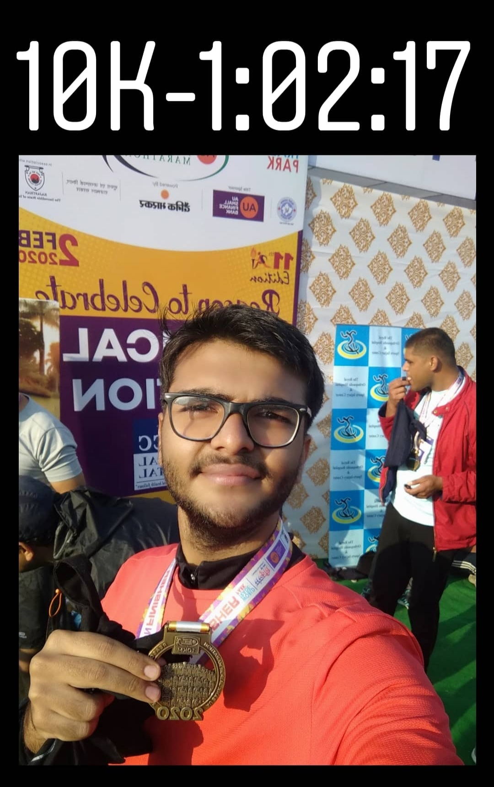

After my first 10K race I was confident of myself that I can run a better time, with training, exercise and proper care of my body. So I decided to run another 10K at Jaipur Marathon on 2nd Feb, but this I had less time(2-3 weeks) to train for it as planned my run at last moment. But that didn't afraid I did my training propoerly ate healthy and was ready for the race. I left from the college the night before the raceday to my maternal grandmother(nani)'s home as my college is outside the city.
It was time for another 4 AM alarm , and I was ready by 5:00 and left for Albert Hall, Jaipur where was supposed to start, it was a cold, and was still dark and I was unable find any cab or moto so I walked to Albert Hall it was about 2.5 kms. I reached there at 5:30, did some warm-up and was ready to for the kick-off. This time I tried to maintain my pace from the starting of race, though it was congested but I raced my way through I was going great, properly breathing, taking to myself telling not to push hard just maintain the 6:15 pace. And I completed half way mark in 30:44 Avg.Pace 6:09, then I said to myself that now you are not going down from now there is only one way that is going forward. I maintained my pace 6:04 at 7.5 km mark(45:31) then I thought that now my goal is to cover 2.5kms in 14 mins and that's it. Ipushed myself but fall 2 mins 26 secs short of my sub 60 min 10K.
But I wasn't disappointed with such a short duration of training I was able to pull out such a great time.